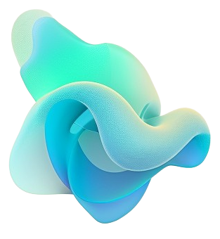
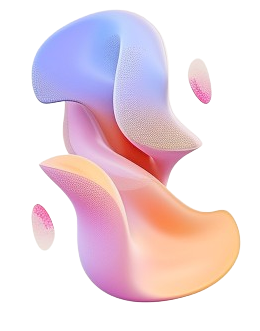
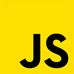

UX-Driven Frontend Developer
with Design Edge
디자인 감각과 퍼블리싱 실무 경험 위에 AI의 속도를 더했습니다. 백엔드 데이터의 흐름을 이해하고, 사용자 친화적인 UI를 압도적인 생산성으로 구현하는 프론트엔드 개발자입니다.
대표 프로젝트 보기About Me
디자인의 디테일과 백엔드의 흐름을 잇는, 실용주의 프론트엔드 개발자
디자인 전공으로 픽셀 단위의 디테일을 보는 눈을 키웠고, 16개월간의 퍼블리싱 실무를 거치며 웹 표준과 반응형 UI라는 탄탄한 뼈대를 세웠습니다. 이후 7개월간 백엔드 구조를 학습하며 화면 뒤로 데이터가 어떻게 흐르고 연결되는지 이해하게 되었습니다.
최근 개발의 핵심은 AI라는 강력한 도구를 어떻게 나의 기존 기술과 융화시키느냐에 있다고 생각합니다. 저는 Cursor와 Claude를 사용할 때 AI에게 무작정 결과를 의존하지 않습니다. 대신 제가 직접 설계한 컴포넌트 규칙과 디자인 의도(Context)를 명확히 가이드하여, AI가 엇나가지 않고 제 의도대로 코드를 생산하도록 조율합니다.
Projects
코드모아 (CodeMoa)
AI 학습·커뮤니티를 결합한 웹 서비스 — 디자인 총괄로서 UI/UX 아키텍처 설계 및 데이터 연동 (기여도 60%)
UI/UX Focus
팀 내 디자인 총괄을 맡아 전체 화면의 UI 규칙과 컴포넌트 구조를 직접 기획하고, 팀원들의 작업물이 하나의 디자인 언어로 보이도록 가이드했습니다. Thymeleaf 템플릿과 순수 JS/CSS를 활용해 시각적 일관성을 맞추고, 동적인 사용자 인터페이스를 구현했습니다.
AI Collaboration
WebSocket 기반의 실시간 채팅 UI나 JWT 인증 흐름 등 복잡한 프론트엔드 로직 작성 시, Cursor를 활용해 초기 구조(Boilerplate)를 빠르게 생성했습니다. 명확한 컨텍스트(디자인 규칙)를 AI에게 위임하여 개발 시간을 단축하고, 저는 디테일과 화면 렌더링 최적화에 집중했습니다.
Backend Understanding
단순히 화면만 그린 것이 아니라 Spring Boot 기반 API(JPA, MySQL)를 직접 설계하고 연동했습니다. 서버에서 데이터가 어떻게 넘어오는지 알기 때문에, 클라이언트 측에서 발생할 수 있는 예외 처리(네트워크 지연, 포맷 오류)를 사전에 차단하는 견고한 로직을 짤 수 있습니다.
Focus Design System
학습 습관 앱을 위한 재사용 가능한 컴포넌트 디자인 시스템 — 토큰 설계부터 컴포넌트 라이브러리 구축까지 직접 진행 (개인 프로젝트, 기여도 100%)
Design Tokens
색상·타이포·간격·반경을 CSS 커스텀 프로퍼티로 토큰화해서, 하나의 값만 바꿔도 전체 화면과 라이트·다크 테마가 함께 갱신되는 구조를 설계했습니다.
Component Library
버튼·카드·폼·모달·드롭다운·캘린더 등 30개 이상의 컴포넌트를 프레임워크 없이 순수 HTML/CSS/JS로 구현하고, 그 컴포넌트만으로 실제 화면 2종을 조립해 재사용성을 검증했습니다.
AI Collaboration
Claude와 함께 반복되는 UI 패턴을 컴포넌트 단위로 추상화하고, 접근성(ARIA)·다크모드 대응까지 빠르게 반영하며 설계 의도를 코드로 옮겼습니다.
Skills
1. Frontend & UI/UX (Main)
픽셀 단위의 디테일과 반응형 웹을 구현하며, 사용자 경험(UX)을 주도합니다.
HTML5 / CSS3
시맨틱 마크업과 웹 표준을 준수하며, Flex/Grid 기반의 완벽한 반응형 레이아웃을 설계합니다.

JavaScript
동적 UI 구현 및 비동기 API 통신을 다루며, 사용자 인터랙션과 렌더링 최적화에 집중합니다.
Tailwind CSS / SCSS
유틸리티 퍼스트 및 변수/모듈 기반의 스타일링으로 팀 내 UI 컴포넌트의 일관성과 유지보수성을 높입니다.
React / Vue.js (AI-Assisted)
AI 어시스턴트를 활용해 상태 관리(State) 및 컴포넌트 기반 화면을 실무 수준으로 빠르게 스캐폴딩(Scaffolding)합니다.
Photoshop / Illustrator
단순 코딩을 넘어 직접 에셋을 편집하고 벡터 시각물을 다루어, 퀄리티 높은 시각적 디테일을 보증합니다.
2. AI & Productivity (Specialty)
AI 에이전트의 컨텍스트를 제어하여 개발 생명주기를 극대화합니다.
Cursor (Expert)
프로젝트 룰셋(.cursorrules)을 활용하여 AI가 팀의 코드 컨벤션을 따르도록 제어하며, 리팩터링 및 보일러플레이트 생성 속도를 비약적으로 단축합니다.
Claude Code
긴 맥락의 아키텍처 설계 논의, 예외 처리 로직 검증 등 복잡한 문제 해결을 위한 ‘마이크로 위임’ 파트너로 활용합니다.
Prompt Engineering
모호한 요구사항을 제약 조건, 단계, 기대 출력이 명확한 구조화된 프롬프트로 설계하여 AI의 환각(Hallucination)을 통제합니다.
3. Backend & Collaboration (Support)
서버의 데이터 흐름을 이해하여 프론트엔드의 병목을 예방하는 기반 지식입니다.
Java / Spring Boot
RESTful API 구조와 보안, 도메인 로직을 이해하여 백엔드 개발자와의 소통 비용을 제로에 가깝게 만듭니다.
MySQL / Oracle
데이터 스키마와 관계형 DB의 흐름을 파악하여 클라이언트에서 데이터를 효율적으로 가공합니다.
Git / Figma
브랜치 및 PR 기반의 코드 형상 관리와 와이어프레임 수준의 UI/UX 기획 협업에 능숙합니다.
My Journey
Design Background
약 17개월 · 시각 디자인 · 제품·프로모션 그래픽 (2016.05–2017.10)
DOBUDDY 등에서 아크릴 제품·브로슈어·상세 페이지 등 시각 디자인을 담당하며 픽셀 단위 디테일과 비주얼 톤을 익혔습니다.
Web Publisher (실무)
약 16개월 · 퍼블리셔 실무·양성과정 통합 서술
NICEBOOK 웹 퍼블리셔(2020.07–2021.10)와 그린컴퓨터학원 퍼블 과정(2019.07–2020.02) 등을 묶어, 웹 표준·반응형·기획–디자인–개발 사이 UI 전달에 집중했습니다. SEO·리뉴얼·트래픽 개선 경험을 포함합니다.
Full-stack / Backend Training
약 7개월 집중 · 글로벌아이티 인재개발원 (2025.02–2025.08)
Spring Boot·JPA·MySQL과 팀 프로젝트 코드모아로 API 설계·DB·배포까지 스펙트럼을 넓혔습니다.
Web Operation & UI Design (실무)
약 3개월 · 네오빅스 (2026.05.07–2026.08.13)
렌탈 전문 기업 네오빅스에서 사이트 운영 및 제품 업로드를 주로 담당했고, 그 외 UI 디자인·가격 관리·배너 제작 등 사이트 전반의 운영 업무를 함께 수행했습니다.